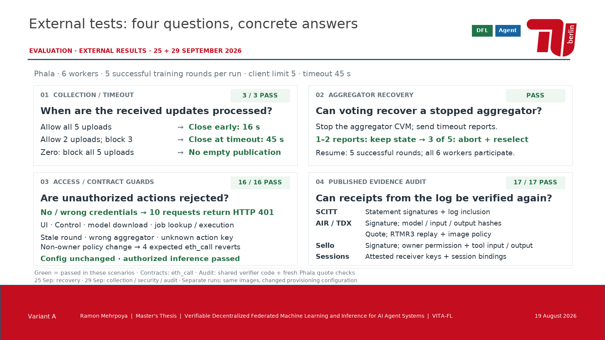
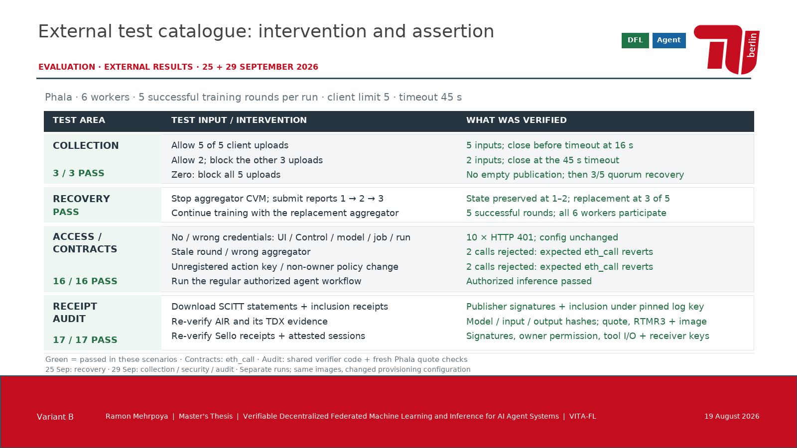
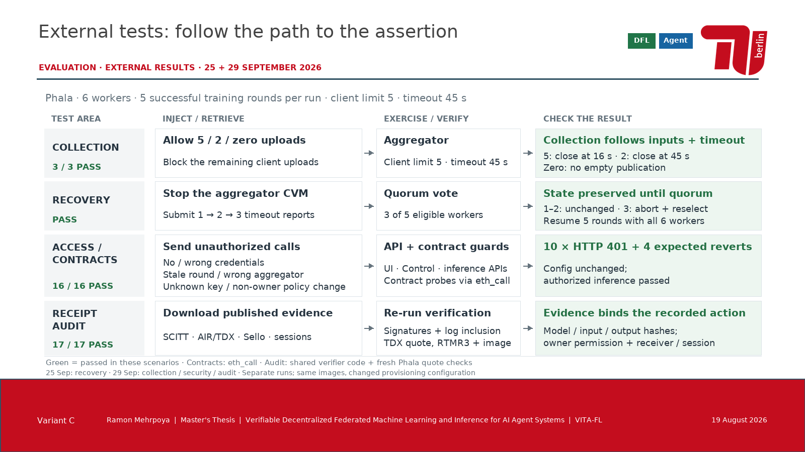

A · Vier TestfragenJede Kategorie zeigt die konkrete Testfrage, den Eingriff und die beobachtete Antwort.PowerPoint · Vollbild
B · Konkreter TestkatalogEinzelne Testfälle: Was wurde eingegeben oder gesperrt, und welche Eigenschaft wurde überprüft?PowerPoint · Vollbild
C · Vier PrüfpfadeFür jede Kategorie ein eigener Weg: Eingriff oder Evidenz → geprüftes System → Ergebnis.PowerPoint · Vollbild